프로젝트 / Projects — 카드를 누르면 펼쳐지고, 탭으로 내용을 전환합니다
01
멀티 셀러 E-커머스
구매자·판매자·관리자 3개 역할이 상품 등록 → 승인 → 결제 → 정산 흐름을 나눠 쓰는 오픈마켓. 배포 후 운영하면서 깨진 것을 재현하고 고쳤습니다 — 사내 데이터 LLM · Sentry 무음 장애 · 결제 경합. 운영 중
여러 판매자가 한 플랫폼에 입점하는 멀티 셀러 오픈마켓입니다. 판매자가 등록한 상품은 관리자가 승인해야 게시되고, 한 주문에 여러 판매자 상품이 섞이므로 배송과 정산을 판매자별로 분리해야 합니다. 상품 등록 → 관리자 승인 = 게시 → 주문 → 결제 → 판매자별 배송 → 구매 확정 → 정산까지 이커머스 전체 흐름을 1인 풀스택으로 구현했고, 배포 후 실제로 운영하면서 관리자 AI 어시스턴트(사내 데이터 LLM), Sentry 관측, nginx/HTTPS, 접근성 개선을 더했습니다. 본 포트폴리오는 프론트엔드 직무 기준으로 서술하며, 백엔드·인프라는 보조로 둡니다.
브라우저가 EC2를 직접 부르면 도메인이 달라 refresh 쿠키가 어긋납니다. 그래서 브라우저는 Vercel rewrites로 /api/*를 같은 출처처럼 부르고, 로그인·갱신·로그아웃은 Next.js BFF가 쿠키를 처리합니다. API는 EC2의 nginx(TLS 종료·Let's Encrypt) 뒤에서 NestJS로 운영하며, nginx/HTTPS를 도입할 때도 브라우저 경로는 그대로 두었습니다. PortOne 결제 웹훅(웹훅 경로만 IP 허용)과 React Native 운영 앱(쿠키 없이 토큰)은 nginx로 직접 들어옵니다. 이 구조 때문에 브라우저 경로가 한 홉 더 길어 결제 확정에서 경합이 기본값이 되었고, 이를 트러블슈팅 ③에서 다룹니다. 인증은 Access=메모리 / Refresh=httpOnly 쿠키 회전, 데이터는 RSC에서 prefetch → dehydrate → HydrationBoundary로 넘긴 뒤 TanStack Query가 캐시·무효화를 담당합니다.
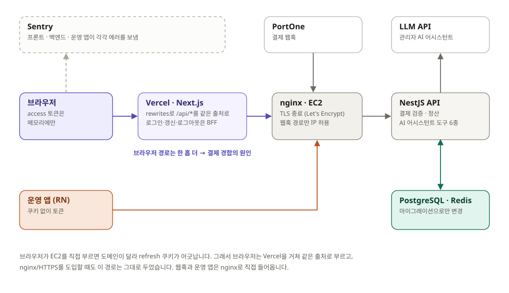
- Next.js 15 App Router — 상품 상세를 RSC + prefetch + ISR로 바꿔 LCP와 TTFB를 함께 개선
- TanStack Query 5 — 무효화가 잦은 도메인. staleTime을 데이터가 바뀌는 빈도에 맞춰 차등
- TypeScript strict + Zod — z.infer로 검증과 타입을 한 곳에서 관리
- Tailwind + CVA — variants 9종으로 UI를 토큰화해 빠르게 반복
- JWT 직접 설계 · BroadcastChannel — 회전과 401 큐를 직접 다루려고 인증 라이브러리 없이 구현, 메모리에만 있는 토큰을 새 탭에 전달
- Sentry — 프론트·백엔드·앱 3개 프로젝트, 소스맵으로 원본 줄 번호 확인
- NestJS · PostgreSQL · Redis / Nx + Yarn 4 — 도메인이 많고 결제에서 트랜잭션 제어가 필요. 모노레포로 프론트·백엔드 타입 공유, 바뀐 프로젝트만 CI
- 쓰지 않은 것 · 클라이언트 상태 라이브러리 — 서버 상태는 Query, 나머지는 로컬 상태로 충분했습니다
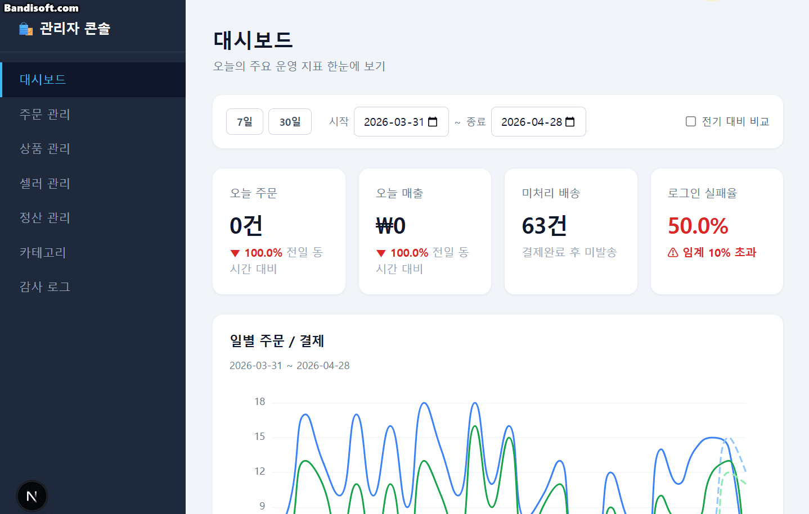
- KPI 카드 4장 — "오늘은 어제 같은 시각보다 나은가". 주문은 생성 시각, 매출은 결제 시각 기준으로 세고, 실패율이 10%를 넘으면 ⚠ 표시.
- 주문 추이 — "주문·결제·취소가 날마다 어떻게 변하나". 빈 날은 0으로 채워 x축을 유지하고 직전 기간을 겹쳐 비교.
- 보안 · 이중 Y축 — "로그인 실패가 건수로도 비율로도 늘었나". 막대 = 실패 + 잠금, 선 = 실패율. 잠금은 결과라 분모에서 제외.
- 결제 전환 퍼널 — "기간 안의 주문이 어느 단계에서 빠지나". 한 묶음(코호트)의 단계별 도달·이탈률, 취소는 퍼널 밖 별도 박스.
- 캐시 · 필터 · 번들 · 모바일 — staleTime KPI 1분 · 추이·보안 5분 · 퍼널 10분 / 필터는 차트 3종에만, 조건은 URL 쿼리에 최대 90일 / ECharts를 next/dynamic으로 분리해 First Load JS 598 → 261 kB / 칩 줄·표 가로 스크롤로 390px 9개 라우트 넘침 0.
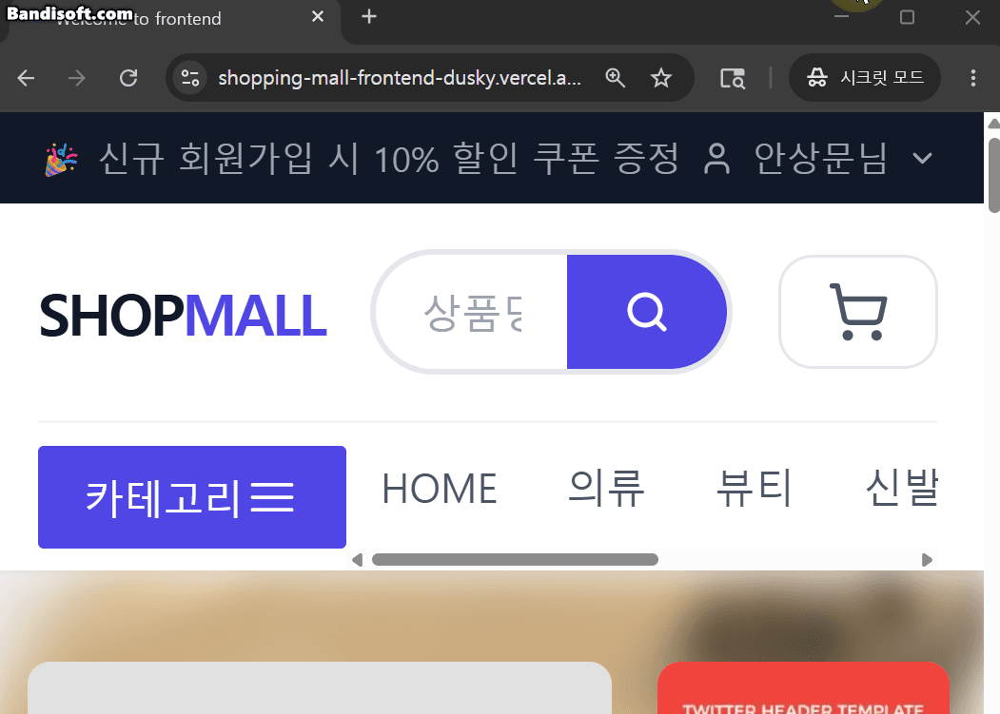
- 토큰 저장 — access는 메모리에만, refresh는 httpOnly 쿠키로 회전. 스크립트가 꺼낼 수 있는 저장소에 토큰을 두지 않습니다.
- 새 탭 — 메모리가 비어 있는 새 탭은 BroadcastChannel로 다른 탭에 REQUEST_TOKEN을 보내고 TOKEN_RESPONSE를 받아 세션을 이어받습니다. 로그아웃도 같은 채널로 모든 탭에 전파.
- 동시 401 — refresh가 진행 중이면 같은 Promise를 돌려주고, 아니면 플래그를 세우고 공유 Promise를 만듭니다. 동시에 401을 받아도 refresh는 1회(트러블슈팅 ④).
- 테스트 — axios 어댑터만 mock한 Jest spec 5케이스. 동시 401 두 건에서 refresh 1회, 원 요청 2 + 재시도 2 = 4회를 단언.
- 컴포넌트 axios 직접 호출 0건 — public/auth 클라이언트 분리로 공개 호출에 토큰 누출 방지.
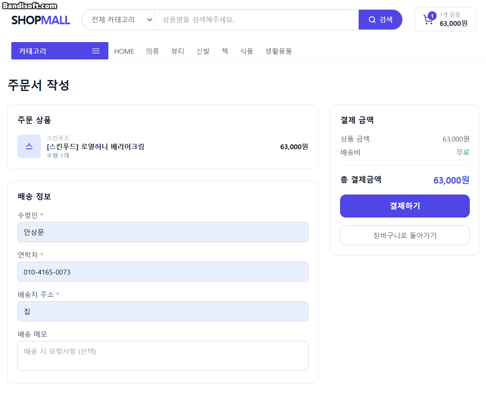
결제 도중 정지되어있는 화면이 gif 파일 오류라고 생각하실까봐 마우스를 움직였습니다.- 금액 — 결제창에 넘기는 금액은 화면에서 계산한 값이 아니라 서버가 만든 주문의 totalAmount. 서버는 결제 후 PortOne 조회 금액과 한 번 더 대조하고, 불일치하면 즉시 PortOne 취소를 요청합니다.
- 중복 클릭 — 결제 중에는 isProcessingRef로 두 번째 제출을 막고, 끝나면 cleanup으로 풉니다. state가 아니라 ref라서 리렌더를 기다리지 않고 바로 막힙니다.
- 확인 실패 — 돈은 빠져나갔는데 서버 검증만 실패했을 수 있어서, 결제가 실패했다고 단정하지 않고 주문 상세로 보내 실제 상태를 보게 합니다. 결제창을 닫거나 SDK 오류가 나도 같습니다.
- 미결제 · 자동 환불 — 30분 넘게 결제되지 않은 주문은 10분 주기 작업이 취소하고 재고를 되돌립니다. 이후 웹훅이 뒤늦게 도착하면 PortOne 취소 API를 호출해 유령 결제를 막습니다. 두 결제 경로의 동시성은 트러블슈팅 ③.
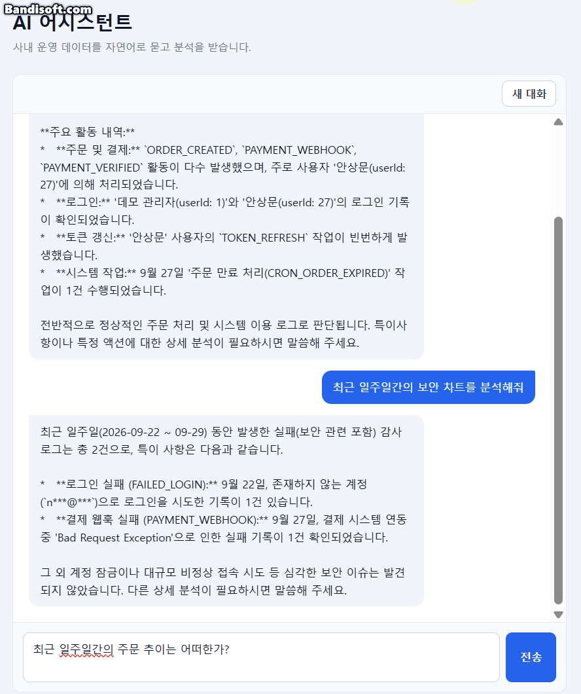
- SQL 대신 기존 서비스 6종을 도구로 — LLM에 SQL을 맡기지 않고 이미 있는 NestJS 서비스를 도구로 노출해 권한·검증 로직을 그대로 재사용.
- 개인정보 가리기 — 도구 결과는 직렬화 인터셉터를 거치지 않아 @Exclude가 무력했습니다. 필드를 골라 새 객체로 만들고 이메일·IP를 가린 뒤 LLM에 넘깁니다(화면의 n***@***).
- SSE 스트리밍 채팅 — 답변이 생성되는 대로 화면에 흘려 보여주고, 새 대화로 맥락을 끊을 수 있습니다.
- 연결 품질은 숫자로 — 골든셋 20문항을 규칙과 LLM-judge로 채점. 과정은 트러블슈팅 ①.
| 지표 | 무엇을 재나 | 전 | 후 |
|---|---|---|---|
| 도구 선택 · 규칙 | 맞는 사내 데이터를 불렀나 | 16/17 | 17/17 |
| 충실성 · judge | 데이터에 없는 수치를 지어내지 않았나 | 15/15 | 15/15 |
| 함정 질문 · judge | PII 요청·인젝션을 거절했나 | 5/5 | 5/5 |
| PII · 정규식 | 응답에 이메일·전화가 새지 않았나 | 0 | 0 |
| 시나리오 | 이벤트 |
|---|---|
| A · 잡히지 않은 에러 발생 | 1 |
| B · API 요청 전부 차단 | 0 |
| C · 아무 조작 없음 | 0 |
const isNetworkFailure = !error.response;
const isServerFailure =
(status ?? 0) >= 500;
if (!isNetworkFailure &&
!isServerFailure) return;| 경로 | 타이밍 |
|---|---|
| 웹훅 · nginx 직행 | 처리하며 락 보유 · 103~133ms |
| verify · Vercel 경유 | 44~69ms 도착 → 락 대기 → 재검증 |
const locked = await manager
.createQueryBuilder(PaymentEntity, 'p')
.setLock('pessimistic_write')
.where('p.id = :id', { id: payment.id })
.getOne();
// 락 후 재검증: 웹훅이 먼저 처리했을 수 있음
if (locked.status === PaymentStatus.PAID)
return null;
// ...
if (updated) {
this.eventEmitter.emit('order.paid', /* ... */);
}// 이미 refresh 중이면 기존 Promise 반환
if (isRefreshing && refreshPromise) {
return refreshPromise;
}
// ...
isRefreshing = true;
refreshPromise = (async () => {
// ... refresh 1회 → 새 토큰으로 원 요청 재시도Lighthouse 점검 중 홈만 LCP가 Slow 4G에서 33.7s(Performance 66)임을 발견 → lcp-discovery-insight로 LCP 요소가 CSS 배경의 2.9MB PNG임을 특정(FCP 2s vs LCP 35s 격차가 곧 이미지 다운로드 시간). 프리로드 스캐너가 CSS 배경을 못 본다는 점을 확인하고 sharp로 WebP 변환 + next/image priority로 교체해 preload fetchpriority가 자동으로 붙게 했습니다. 측정: 2026-05, Chrome DevTools 모바일·Slow 4G. TTFB는 ISR 캐시 HIT, curl 3회.
홈·목록·상세·로그인·장바구니·주문서 6페이지를 axe-core + Playwright 키보드 스크립트로, 수정 전후 같은 스크립트로 쟀습니다. 공용 컴포넌트 중심으로 고쳤습니다 — 건너뛰기 링크와 main 영역 추가, 하위 카테고리는 disclosure 패턴, 공용 모달에 포커스 관리, 동작 줄이기 설정이면 배너가 처음부터 멈춥니다.
| 항목 | 수정 전 | 수정 후 |
|---|---|---|
| axe WCAG 2.1 A/AA 위반 | 24곳 | 0 |
| 본문 첫 요소까지 Tab | 15회 | 2회 |
| 모달 포커스 | Tab 8회 모두 밖으로 이탈 | 이동 · 가두기 · 복귀 |
| 하위 카테고리 | hover로만 열림 | 키보드로 도달 |
| 자동 넘김 배너 | hover로만 멈춤 | 멈춤 버튼 · 포커스 시 멈춤 |
- ARIA는 있었지만 쓸 수 없던 곳 — 장바구니의 고정 aria-label이 화면의 "1개 담음·12,000원"을 덮어써 개수를 못 읽음 / 주문서 label이 입력칸과 연결되지 않아 placeholder를 이름으로 읽음(axe도 못 잡음) / 모달에 role·aria-modal은 있었지만 포커스 관리가 없음
- 검증 — 모달 포커스 규칙을 단위 테스트 5건으로 고정(수정 전 코드에서 3건 실패). 장바구니 담기·수량 변경 안내 3곳은 NVDA로 직접 들어 확인
- 남은 한계 — 배너 이미지 속 글자에 대체 텍스트 없음, 푸터 링크가 href="#"
- 관리자 대시보드 First Load JS 598 → 261 kB (−56%) — ECharts(gzip 337 kB)를 next/dynamic으로 분리한 효과를, 정적 import로 바꾼 빌드와 라우트 표를 비교해 쟀습니다(2026-09-29). 바뀐 라우트는 이 한 페이지뿐입니다.
- frontend/src TypeScript 100%, 3개 Route Group 분리, 컴포넌트 axios 직접 호출 0건(service 모듈 경유)
- 결제·인증의 동시성 문제를 재현 → 분석 → 방어 → 테스트까지 닫음
- 배포 후 일부러 깨뜨려 보는 실험(백엔드 16분 중단, 운영 결제 7건 실측)으로 사각지대를 찾음
- 모든 성능·접근성 수치를 측정 방법과 함께 기록
- LLM 연결 품질을 골든셋으로 재고 고침
- 프론트 테스트가 1개뿐 → 5개 파일 40건, 401 인터셉터부터
- 동시성 코드에 테스트 없음 → 401 spec 5케이스, 결제 통합 테스트 30라운드
- nginx 없이 Next.js 프록시 → nginx + Let's Encrypt 도입, 프론트 변경 없음
- dynamic import 효과를 잰 적 없음 → First Load JS 598 → 261 kB
- 접근성이 ARIA 속성 수준 → axe 위반 24 → 0, 본문까지 Tab 15 → 2회
- 배너 이미지 속 글자에 대체 텍스트 없음, 푸터 링크 href="#"
- 관리자 대시보드에 최근 인시던트 위젯(Ops Companion과 연결)
- 디자인 토큰을 Storybook 카탈로그로 정리
02
Ops Companion
E-커머스의 Sentry 이슈를 푸시로 받아, AI가 소스 코드를 읽고 원인·조치를 정리하면 사람이 폰에서 스와이프로 채점하는 React Native 운영 앱. 푸시·딥링크·생체 잠금·제스처처럼 웹으로는 안 되는 것만 담았습니다.
운영 중인 E-커머스에서 에러가 나면 폰으로 알림을 받고, AI가 소스 코드를 읽어 원인과 조치를 정리하고, 사람이 그 분석을 스와이프로 채점합니다. 채점 결과는 프롬프트·도구 구성별로 비교되고, 승인된 분석대로 실제 코드를 고친 뒤 재현 스크립트와 Sentry로 다시 확인하는 데까지 이어집니다. 앱에는 푸시·딥링크·생체 잠금·제스처처럼 웹으로는 안 되는 것만 담았고, 같은 RN 코드의 웹 빌드로 설치 없이 체험할 수 있게 했습니다. 인시던트 7건 · 평가자 1명인 작은 표본이라, 결과는 "증명"이 아니라 "확인"으로 적습니다.
1 수집 백엔드가 2분마다 Sentry API를 읽습니다(웹훅 대신 폴링이라 공개 엔드포인트가 필요 없음). → 2 알림 앱이 꺼져 있을 때·백그라운드·열려 있을 때 모두 딥링크로 같은 상세 화면에 도착. → 3 분석 스택의 파일을 읽는 도구(허용 폴더만, 80줄씩)와 배포 사실 4줄로 원인·조치를 JSON으로. → 4 채점 어떤 프롬프트 버전인지 API 응답에서 지워 평가자가 모르게. → 5 비교 같은 이슈를 4가지 구성으로 분석해 버전별 승인율·별점 비교. → 6 수정 승인된 분석대로 고치고 재현 스크립트와 Sentry로 확인. LLM 키·Sentry 토큰·GitHub 접근은 모두 백엔드에만 두고, 앱은 백엔드 API만 부릅니다.
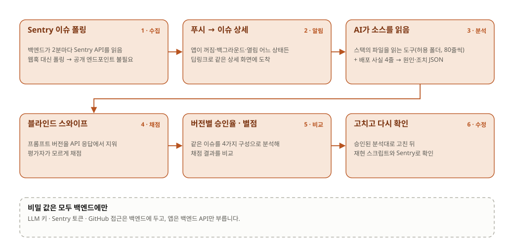
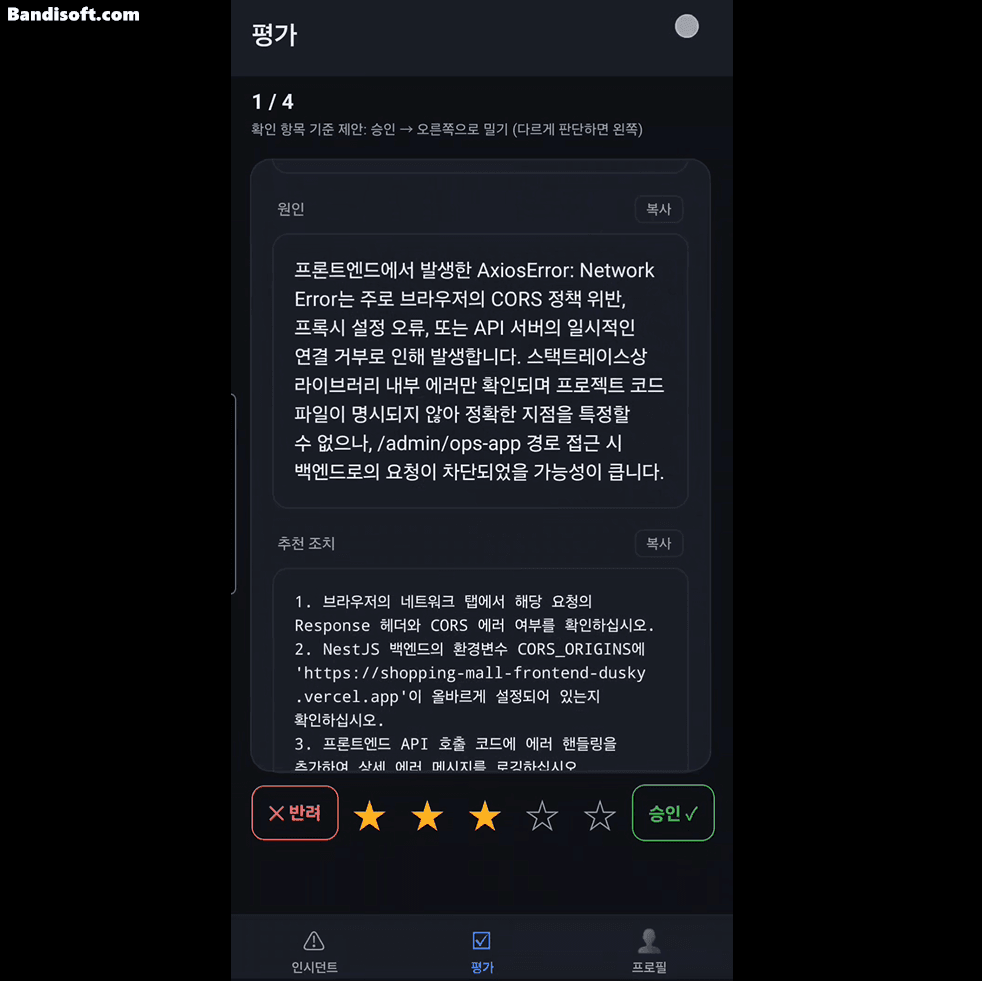
- Pan 제스처 + Reanimated — 카드를 밀면 승인·반려. 서버 응답을 기다리지 않고 다음 카드로 넘깁니다.
- 버린 방식 · 실패하면 목록 전체를 롤백 → 고른 방식 · 실패한 카드 한 장만 맨 앞으로 복귀. 연달아 넘긴 다른 카드의 채점은 그대로 남습니다.
- 블라인드 — 카드에 어떤 프롬프트 버전인지 표시하지 않습니다(버전은 API 응답에서 제거).
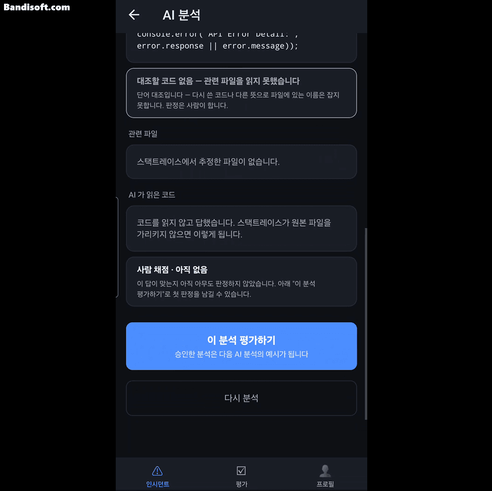
- ① 원인으로 짚은 파일·함수가 메모의 "원인 위치"와 같은가? ② 조치 코드의 이름(변수·함수·환경변수)이 모두 메모의 실제 코드에 있는가?
- ③ 조치를 그대로 붙여 넣어도 되는가? ④ 확신도가 근거에 비해 과하지 않은가?
- ①② 중 하나라도 ✗면 반려를 제안, ③④는 별점에 반영. 제안과 다르게 스와이프해도 됩니다.
- 사람이 놓치는 이름 대조는 규칙 기반 "코드에 없는 이름" 칩이 보조(트러블슈팅 ①).
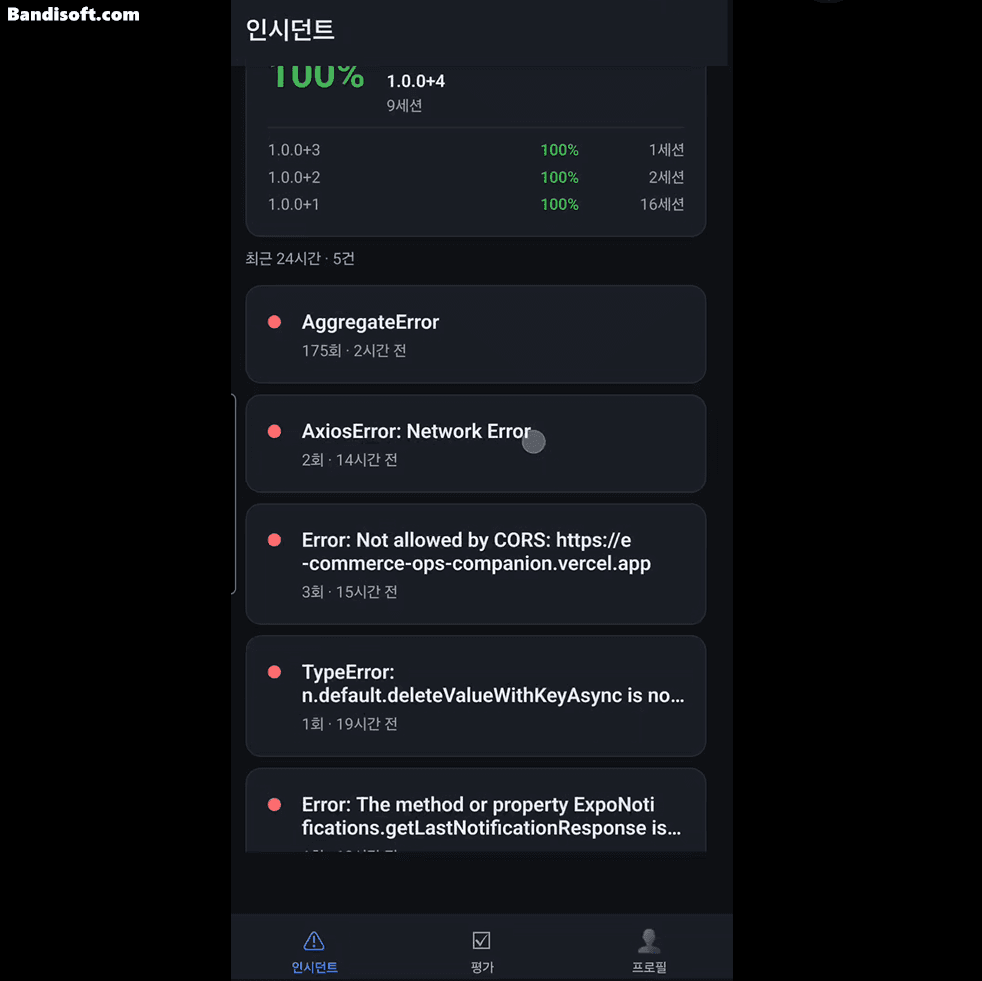
- 코드 읽기 도구 — 스택의 파일을 읽되 허용 폴더만, 한 번에 80줄씩. 여기에 배포 사실 4줄(어디에 어떻게 배포되는지)을 붙여 원인·추천 조치·확신도를 JSON으로 받습니다.
- 화면 — 확신도 배지, 원인과 추천 조치를 나눠 보여주고 각각 복사할 수 있습니다. 예시 코드가 길어도 화면을 넘치지 않게 스크롤.
- 4가지 구성 비교 — 같은 이슈를 프롬프트·도구 유무가 다른 4가지 구성으로 분석하고, 블라인드 채점 결과로 버전별 승인율·별점을 비교합니다.
- 정답 메모는 LLM에 넣지 않음 — 채점용 사실 메모가 분석 입력에 섞이지 않는다는 것을 테스트로 고정했습니다.
| 채점 방식 | 결과 |
|---|---|
| 1차 · 블라인드 채점 | 승인 14/14 |
| 2차 · 사실 메모 + 확인 항목 4개 | 지어낸 이름 적발 0건 |
| 3차 · 이름 대조 칩 (규칙) | 4/7 : 0/7 |
for (const name of checked) {
if (index.has(name)) continue;
if (LIBRARY_LIKE_RE.test(name))
maybeLibrary.push(name);
else unknown.push(name);
}| 5/5 깨짐 | 수정 전, 재현 스크립트로 먼저 기록 |
| 2건 남음 | 가드 4개 파일 후. API 요청 3 → 4가 단서 |
| 5/5 정상 | 형제 컴포넌트까지 수정, 운영 새 이슈 0 |
const products =
Array.isArray(result?.data)
? result.data.filter((p) => p != null)
: [];- 이름 대조 칩: 코드를 안 읽은 분석 4/7 적발 vs 읽은 분석 0/7 — 인시던트 7건 · 평가자 1명 기준
- 승인된 분석으로 고친 버그 5건: 재현 스크립트 5/5 깨짐 → 5/5 정상, 운영 배포 후 새 이슈 0
- E-커머스 장애 실험에서 마지막 Sentry 이벤트 1분 40초 뒤 운영 앱 푸시가 폰에 도착
- 좋은 숫자를 의심하고 채점 도구 자체를 고침
- AI 분석을 실제 수정과 운영 확인까지 이어 감
- 정답 메모가 LLM 입력에 들어가지 않음을 테스트로 고정
- 인시던트 7건, 평가자 1명
- 예시를 넣은 프롬프트는 효과가 없어 운영에 미사용
- 안드로이드만 지원, 네이티브 모듈은 쓰지 않음
- 평가자를 2명 이상으로 늘려 표본 확대
- 같은 에러 유형이면 이전 채점을 힌트로 표시
- 관리자 대시보드에 최근 인시던트 위젯
Android 설치: 다운로드가 100%에서 멈춘 것처럼 보이면 Chrome으로 돌아가 보안 경고의 "보안을 무시하고 설치"(또는 "그래도 설치")를 누르세요. 스토어 밖 앱이라 뜨는 경고입니다.
03
AI 객체 탐지 뷰어
AI 객체 탐지(COCO·YOLOv8) 결과를 2D 이미지와 3D 공간에서 동시에 탐색합니다. 2D·3D·객체 리스트·분석 패널 4개 뷰가 선택 상태 하나를 공유하고, nuScenes 실측 3D를 스위처로 붙여 "추정"과 "실측"을 한 화면에서 비교합니다.
객체 탐지 결과(COCO·YOLOv8)를 보통 2D 박스로만 보는 것과 달리, 같은 결과를 2D 이미지와 3D 공간에서 동시에 탐색합니다. 한 객체를 어느 뷰에서 선택하든 4개 뷰(2D·3D·리스트·분석)가 동시에 같은 객체를 가리키도록 설계했고, nuScenes 실측 3D를 데이터 스위처로 붙여 이미지에서 추정한 3D와 실제 측정된 3D를 한 화면에서 비교합니다. 데이터 소스가 정적 JSON인 클라이언트 SPA입니다 — R3F Canvas라 전 페이지가 클라이언트 렌더링이며, SSR 경험으로는 적지 않습니다.
정적 JSON → lib/ 순수 함수 계층(parser·estimator·selector)이 외부 입력을 unknown으로 받아 isCocoDataset 타입 술어로 검증 후 내부 Frame[]로 변환 → Zustand store(단일 선택 상태) → 스토어를 구독하는 곳은 page 하나로 두고, slice selector로 필요한 조각만 읽어 selectedId·onSelect를 props로 내려줍니다. lib/와 components/를 분리해 좌표 변환(global → ego → three)까지 React 밖에서 JSDOM 없이 테스트했습니다.

- Three.js + React Three Fiber + drei — 2D와 같은 데이터를 3D 공간에 선언적으로 렌더링
- Zustand 5 — 4개 뷰가 공유하는 상태를 미들웨어 없는 76줄 단일 스토어로
- Vitest — 파서·좌표 변환·셀렉터를 React 밖 순수 함수로 두고 JSDOM 없이 검증
- TypeScript strict — 외부 입력은 unknown으로 받아 타입 술어로 좁힘, as any 0건
- 쓰지 않은 것 — TanStack Query(데이터가 정적 JSON이라 캐싱·재시도·무효화가 필요 없음) · Zod(외부 입력 지점이 파서 한 곳뿐이라 타입 술어로 충분) · 차트 라이브러리(차트 요소가 5개 이하라 SVG·CSS로 직접) · 폼 라이브러리(입력이 슬라이더 하나라 스토어 액션의 숫자 검사로 대신)
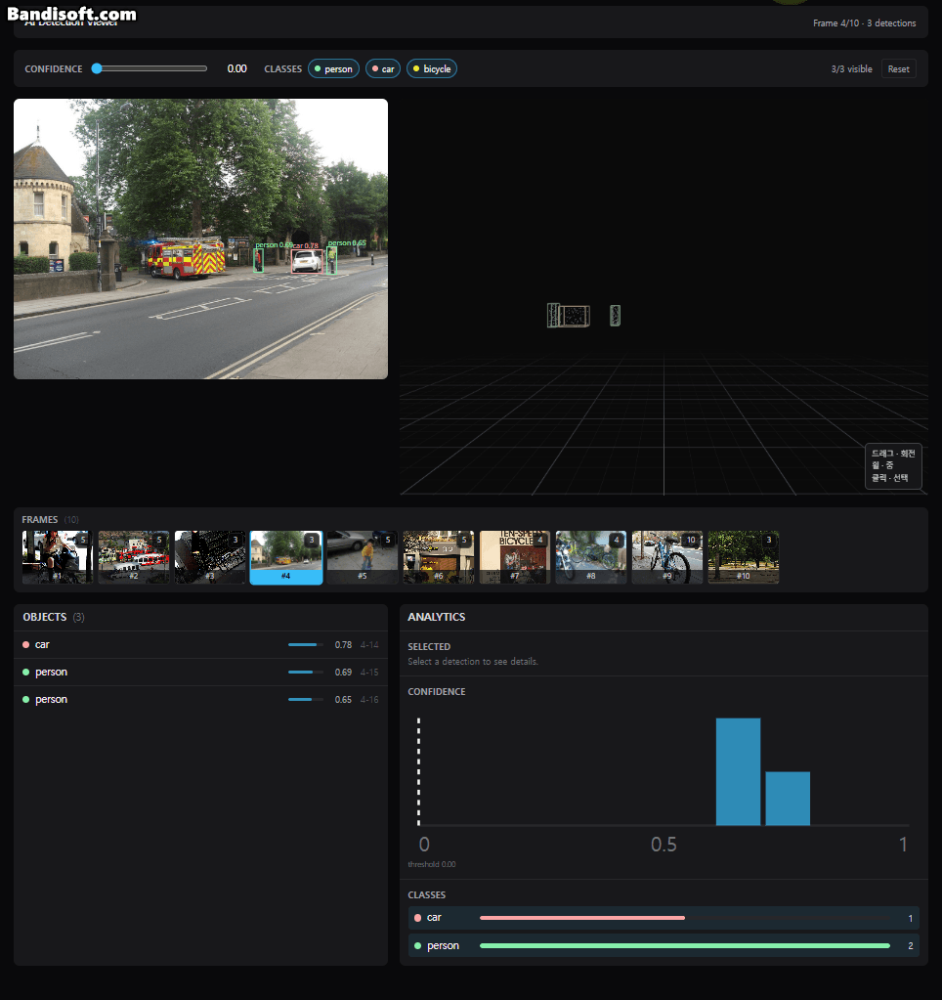
- 단일 source of truth — 선택 상태를 쪼개지 않음2D·3D 뷰별로 selected2D/3DObjectId를 따로 두지 않고 store의 selectedObjectId 한 필드를 4뷰가 공유 — 어느 뷰에서 클릭해도 나머지가 같은 객체를 하이라이트
- slice selector 구독 — 불필요한 리렌더 차단각 뷰가 useViewerStore((s) => s.필드)로 자기가 쓰는 슬라이스만 구독 → 무관한 상태(필터·프레임 등)가 바뀌어도 해당 뷰는 리렌더되지 않음
- 프레임 전환 합성은 page 레이어에서handleSelectFrame: 같은 id면 early-return(no-op), 다르면 프레임 set — 추적이 없는 COCO만 선택 해제, 추적되는 nuScenes는 선택 유지. store 액션은 단일 책임으로 두고 "언제 지울지"만 page가 합성

- drei <Grid> raycast를 no-op 오버라이드 — infiniteGrid는 실제론 거대한 plane mesh라 raycast가 항상 그리드에 맞아 onPointerMissed가 안 터짐 → 마운트 시 grid.raycast = () => {}로 덮어써 빈 공간 클릭 → 선택 해제 계약을 복구
- 불가시 mesh + THREE.DoubleSide로 내부 시점 raycast 보강 — 박스를 선(line segments)만으론 클릭하기 어려워, opacity 0인 꽉 찬 mesh를 겹쳐 raycast 타깃 확보 — THREE.DoubleSide로 카메라가 박스 안으로 들어와도 내부 시점에서 클릭이 등록됨
- useFrame sin 펄스로 선택 강조 — 선택된 박스를 1 + sin(t·freq)·amp 스케일로 매 프레임 맥동시켜 시선을 유도 — 별도 애니메이션 루프 없이 R3F 렌더 틱에 얹어 비용 없이 처리
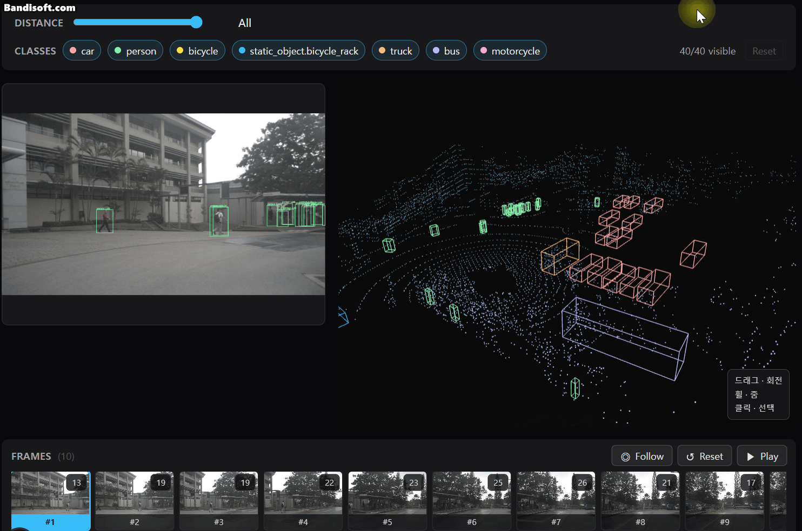
- 재생 로직을 React 밖 순수 함수로 분리 — 다음 프레임 인덱스를 계산하는 nextFrameIndex는 React·store·Three.js를 일절 모르는 순수 함수로 빼서 단위 테스트로 검증. 빈 시퀀스·범위를 벗어난 stale 인덱스도 방어해 타이머가 배열 밖을 가리키는 일이 없게 처리.
- stale closure 회피 — setInterval(500ms ≈ 실제 nuScenes 2Hz 주기)이 매 tick마다 클로저에 갇힌 값 대신 store.getState()로 현재 프레임을 직접 읽음. 프레임이 진행돼도 타이머가 낡은 상태를 참조하지 않음.
- 2계층 시계 — 키프레임 스냅 위에 부드러운 보간 — 0.5초 간격 키프레임을 매번 끊어 보여주는 대신, useFrame으로 현재→다음 키프레임 pose를 보간. 위치는 lerp, 회전은 최단 호를 따르는 slerp로 블렌딩해 박스가 자연스럽게 이동.
- "측정값"의 정직성 유지 — 보간된 중간 pose는 실측이 아니므로, tween은 재생 중에만 동작하고 일시정지·스크럽 시엔 정확한 키프레임(t=0/t=1에서 끝점 그대로)을 표시. "Measured" 뱃지는 항상 실측 키프레임만 가리킴.
- 추적이 성립하는 데이터에만 재생 UI 노출 — nuScenes는 instance id가 프레임 간 유지(track id)되어 재생이 진짜 움직임이 되지만, COCO는 프레임이 서로 독립이라 재생이 무의미한 슬라이드쇼. 그래서 재생/팔로우 컨트롤은 nuScenes에서만 렌더링하고, 진행 시에도 추적 중인 selectedObjectId를 유지(COCO의 프레임 전환과 달리 선택을 초기화하지 않음).
| 수정 전 | 12에서 49까지 계속 증가 |
| 수정 후 | 4~12 사이에서 오르내림 |
// 명령형 BufferGeometry는 R3F 자동 dispose 대상이 아님
// (JSX 자식이 아니라 prop 주입)
const geometry = useMemo(() => {
// ...
}, [visiblePoints, zMin, zMax]);
// ...
// WebGL 버퍼는 JS GC가 회수 못 함 → cleanup에서 명시 해제
useEffect(
() => () => geometry.dispose(),
[geometry],
);// SVG는 CSS z-index 무시 -> paint order = hit-test 순서
// 작은 박스부터 그림 -> 큰 박스가 맨 위
const detections = (
visibleIds
? frame.detections2D.filter(
(d) => visibleIds.has(d.id))
: frame.detections2D
)
.slice()
.sort(
(a, b) =>
a.bbox.width * a.bbox.height
- b.bbox.width * b.bbox.height,
);- global → ego → three 좌표 변환을 순수 함수로 분리해 React·Three.js 없이 검증
- 테스트가 docs/edgecases/Edge_#N.md 문서와 1:1로 매핑 — 발견한 엣지케이스가 잊히지 않는 구조
- GPU geometry 누수 49 → 4~12, 누적 0 (WebGLRenderer.info 콘솔 1초 간격 측정)
- 외부 입력은 unknown + 타입 술어로 좁혀 as any 0건
- GPU 누수를 실측으로 찾고 문서·커밋에 기록
- 선택 상태를 처음부터 한 필드로 설계
- global → ego → three 좌표 변환을 순수 함수로
- 키보드로 객체를 고를 수 없음
- 가장 자주 고친 page.tsx·Viewer2D에 컴포넌트 테스트 없음
- 데이터가 수천 개면 전처리가 화면을 막음
- 지금: Error Boundary, 키보드 선택
- 데이터가 커지면: 지연 전처리, InstancedMesh, 목록 가상화
- 자주 바뀌는 page.tsx·Viewer2D부터 RTL 테스트로 보강